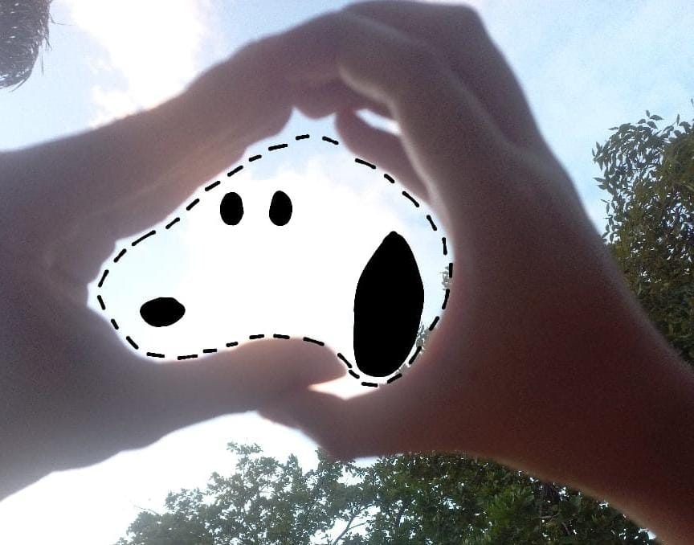
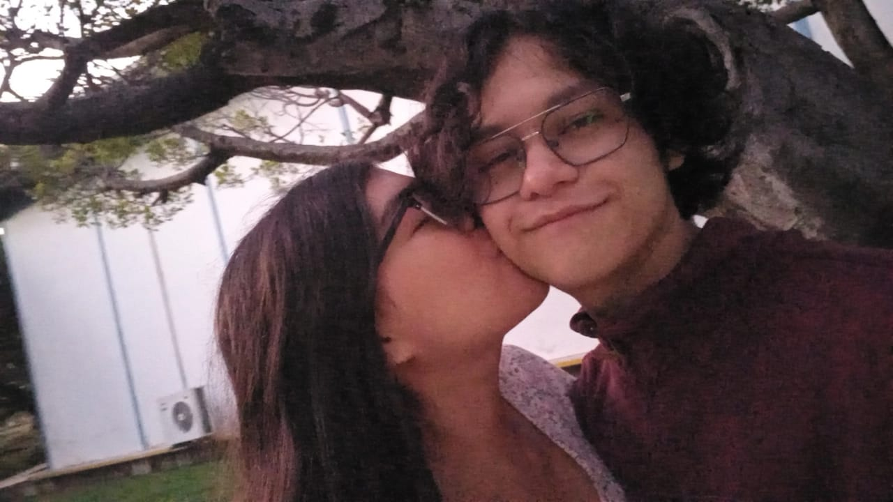
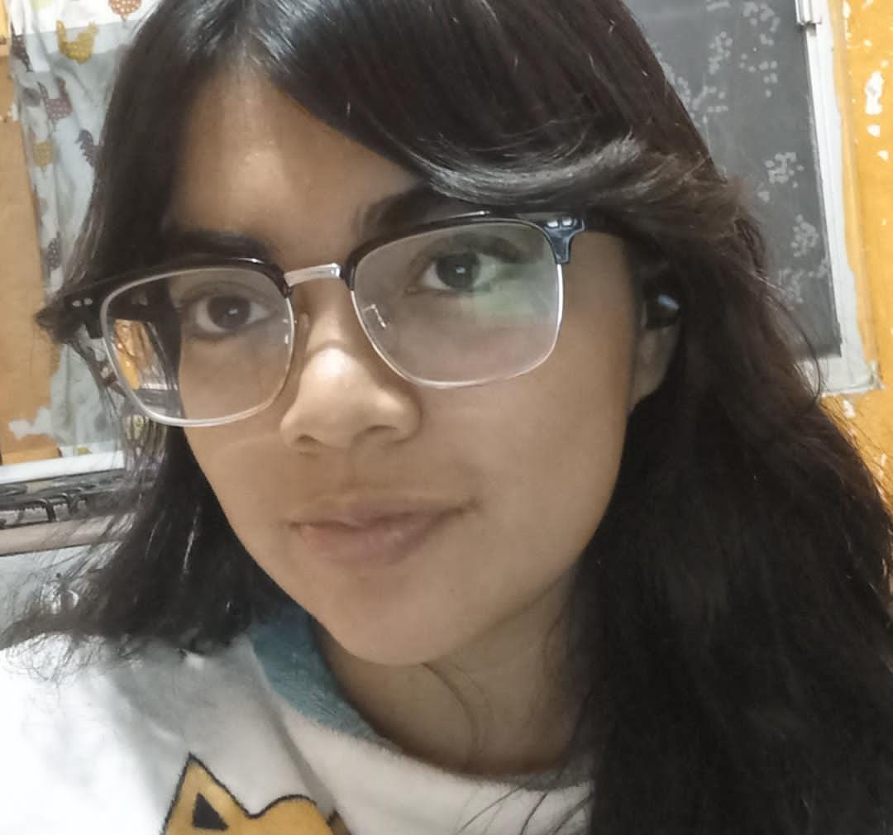
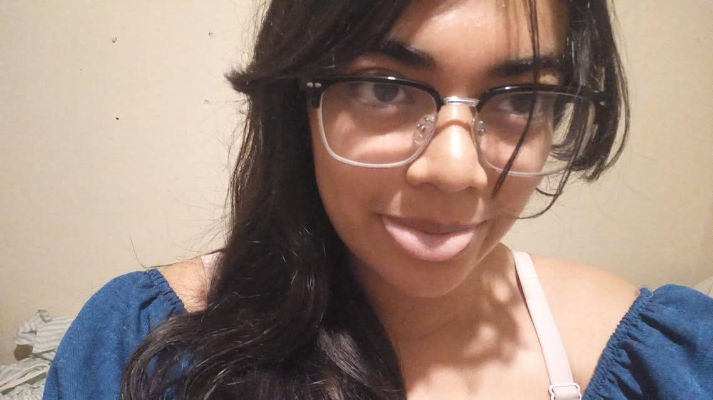
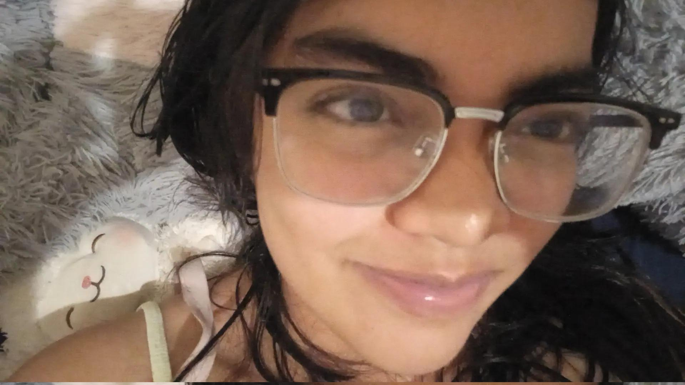
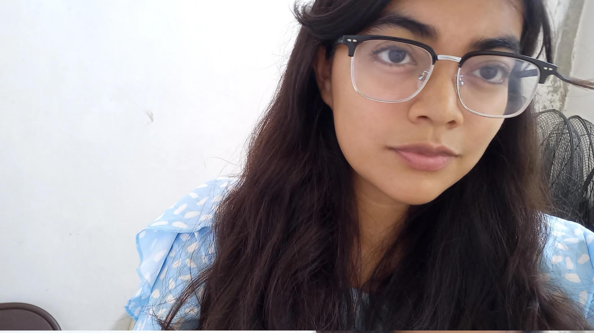
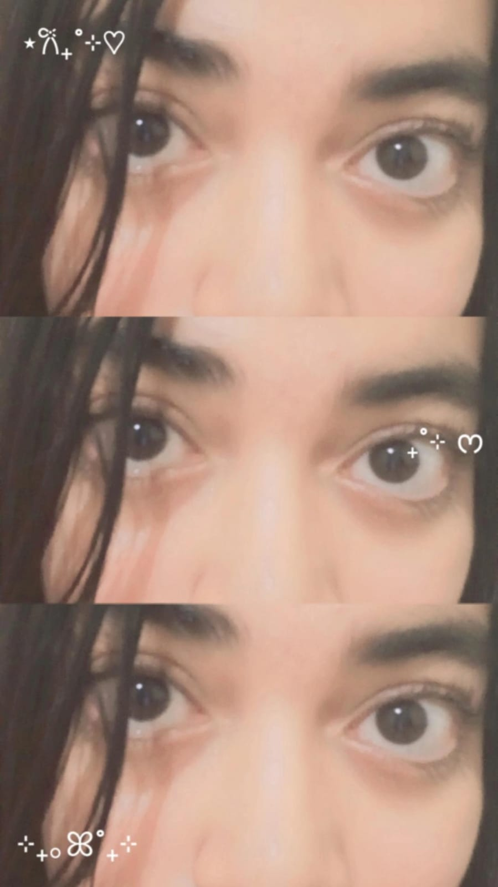

Feliz aniversario, preciosa

Teniendo en cuenta las condiciones en las que me encuentro,
me fue necesario prepararme de esta forma, creo que es muy obvio que esto no sustituye el entregarnos un presente en físico, mas no significa que por la distancia,
no te entregue nada y me quede de brazos cruzados.

Oficialmente, llegamos a un año de relación juntos
Tengo que admitir, no ha sido fácil, mantener una relación es complicada, el hecho de trabajar juntos implica que no siempre las cosas son 50/50, a veces es 70/30, 90/10;
y aún así, lo que importa es que tal relación no fracase y se tire todo lo construído
No creas que el hecho de no hablar no me provoca nada, al contrario, me afecta mucho por días, es muy doloroso a veces, amar requiere sacrificio siempre,
y por eso odio muchas veces no tener tiempo ni siquiera para ti.
Ahora, esto no lo digo como un justificante, pero si algo puedo decir, es que siempre le pido a Dios que todo lo que hago (y aún lo que no hago), valga la pena, no sólo quiero terminar mi carrera, y seguir con algo más simplemente porque sí,
,quiero esforzarme debido a que, cuando termine todo esto, quiero darte la mejor vida posible, estar todo el tiempo que puda contigo, y tener el disfrute de una vida tan amorosa que sólo tú y yo podamos construir.
Te amo mucho Cami, nunca lo digo por decir, de verdad, te amo, y yo creo que te das un pensamiento sobre cuan estoy obsesionado contigo, pero no creo que sepas cuanto te amo,
porque eso, ni siquiera yo lo sé, cuando pienso que no podría amarte más, te recuerdo, veo tus fotos, me acuerdo de tus bellos ojos, de lo bello de tu sonrisa, de lo dulce de tus labios, y no pueda dejar de enamorarme,
es como una chispa que se enciende y se expande para hacer arder todo mi corazón, como si de quemar todo un bosque se tratara.
Hay cosas tan íntimas en mi corazón que pienso de ti, una de ellas es la siguiente: Para mí, eres la mujer más hermosa que puede existir, eres con quien pienso tener descendencia,
y con quien deseo morir lleno de días, yo sé, no suena nada íntimo, pero dime, ¿qué joven ama tanto a una mujer en estos tiempos que anhela casarse con ella y durar toda una vida?
Hay más cosas que deseo contarte que me obsesionan de ti, pero eso lo dejo para otro escrito jsjs, porque, por ahora, solo quiero concentrarme en este recorrido que hemos tenido y, poder reflexionar de ello.
Es cierto que, debido a muchas circunstancias, nos cuesta vernos, por un lado, la escuela nos separa muchas veces, y conforme nuestra edad avanza, las responsabilidades crecen,
tendemos a priorizar más cosas, aunque sabemos que muchas veces, deseemos que no fuera así. Digo esto, porque, con total certeza, quiero tener tu ser a mi lado siempre, por eso, siempre buscaré esforzarme para estar contigo,
no quiero desaprovechar cada minuto que pueda darte tanto afecto físico como pueda entregarte, Te amo y para mí es un privilegio que me ames, vivo enfermo de amor por ti, y le agradezco tanto a Dios por eso,
oro para que nada nos separe, ni la escuela, la familia, la distancia, nada, no quiero separarme de ti, quiero vivir en tu corazón y en el hogar que también sueñas, no hay nada que me haga dejar de amar tu linda sonrisa y tu bello ser.
Ahora, dejame reutilizar este código mientras te digo las cosas más bellas de ti, no por menosprecio a este día, en realidad preparé algo más, esto es solo, una preparación jsjsjs

Ahora esta es mi foto favorita, te ves tan preciosa, y me encanta tu fleco, a pesar de que dijiste que no te gustaba del todo, te queda tan lindo, y te ves tan hermosa, cariño.
Lo digo con toda honestidad, eres tan hermosa, no solo a mis ojos.

Amo cuando haces este tipo de expresiones jsjsj, por alguna razón, me enamoran mucho, me causas ternura, también mucho encanto, tus expresiones son de las cosas que más amo,
porque cada gesto tuyo son pequeños brotes de amor para mí, y no podría ser más feliz que con esas mínimas muecas que me demuestras frecuentemente.

Gracias por mandarme esta foto cariño, ya necesitaba ver lo hermosa que te encuentras, no tienes idea de cuanto necesitaba verte y tener una nueva imagen de ti en mi memoria.

Estoy tan loco por tí, ¿sabes por qué? Porque me atraes tanto cuando tu gesto es de cierta forma seria; sí, así de enfermo de amor estoy por ti, y no me importa que pienses que debo ir al psiquiátrico, si eso significa que debo dejar de enamorarme incluso por solo por escuchar tu respiración entonces prefiero el exilio del respirar.

Nunca me va a faltar esta, me deleito viendo tus ojos, amo tus ojos, son tan atractivos, amo tanto ver(te) tus ojos.
Descarga esto preciosa, te prometo que es algo lindo jsjsjjs
Siempre tengo una canción en mi mente para ti preciosa, y considero la siguiente, una que cuando la escucho, pienso siempre en ti.